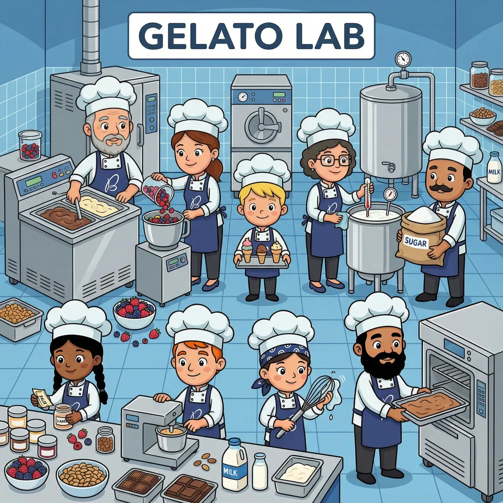
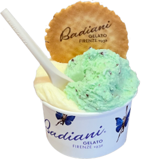
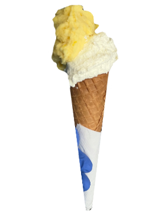
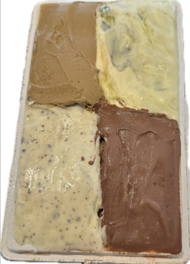
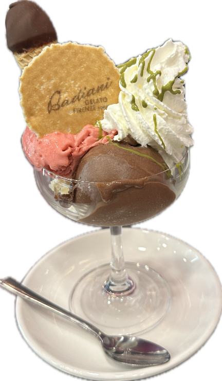
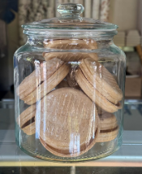

Manuale per il banco gelato: porzioni, servizio take me home, coppe scenografiche e manutenzione della vetrina
a -14/-15°C.

Gelato Lab
Linea gelato
CupsPiccolo 100g
Coppette

Coppette in tre misure: Piccolo (1 gusto, 100 g), Medio (1-2 gusti, 140 g), Grande (1-3 gusti, 180 g).
La chiave · dosare correttamente il gelato e compattarlo bene per eliminare bolle d'aria e dare una presentazione uniforme.
Pesatura: Piccolo 100-120g, Medio 120-160g, Grande 160-200g (controlla sempre)
Tecnica scoop: lineare + ball per look professionale
Compattamento: spingi il gelato sul lato della coppetta eliminando aria
Completamento: offri sempre wafer e panna (upselling)
Temperatura ideale gelato: -14/-15°C (se più caldo · difficile da dosare)
1 · Spingi gelato sul lato della coppetta eliminando aria.2 · Offri wafer/panna e sorridi.
Bambini possono scegliere due gusti anche sul piccolo.
?? UpsellingOpzione 1: "Vuoi passare al medio? Aggiungi un altro gusto e panna"Opzione 2: "Ti aggiungo panna montata e wafer croccante?"Opzione 3: "Con salsa al pistacchio diventa ancora più goloso"
??? Pro tip: Pesa sempre le coppette per rispettare range grammi. Usa tecnica "scoop lineare + ball" per look professionale. Temperatura gelato ideale: -14/-15°C.
ConiGF & Choco
Coni classici

Coni in tre varianti: Classico (1 gusto), Cioccolato o Gluten Free (1-2 gusti). Ogni cono va avvolto con tissue per grip e presentazione.
Mantieni l'area dei coni sempre pulita per evitare contaminazioni di sapori.
Avvolgimento: tissue sempre, per grip e look
Dosaggio: 1 ball per cono piccolo, 1-2 ball per coni speciali (choco/GF)
Posizionamento: appoggia la ball ruotando il cono per stabilità
Pulizia area: ogni 30 minuti elimina briciole (assorbono umidità)
Stock rotation: FIFO rigoroso (i coni assorbono umidità, usa quelli meno freschi prima)
Upgrade upsell: cono cioccolato (ricoperto dentro e fuori), panna montata
1 · Avvolgi cono con tissue.2 · Prepara ball e appoggiala ruotando.3 · Proponi upgrade al cono choco o panna montata.
Mantieni l'area dei coni pulita eliminando briciole.
?? UpsellingOpzione 1: "Upgrade al cono cioccolato? · ricoperto dentro e fuori"Opzione 2: "Cono gluten-free disponibile (se presente)"Opzione 3: "Vuoi panna montata sopra per look Instagram?"
??? Pro tip: Pulisci area coni ogni 30 minuti per eliminare briciole. Rotazione stock: i coni assorbono umidità, usa FIFO rigoroso. Avvolgi sempre con tissue per grip.
Box500-1000 ml
Gelato Boxes

Gelato da asporto in box termici da 500/750/1000 ml. Ogni box mantiene il gelato al giusto stato per circa 40 minuti se messo nella borsa termica.
Comunica sempre al cliente di mettere subito in freezer a casa: il gelato cambia di consistenza quando si scongela.
Piccolo: 500 ml (1-3 gusti)
Medio: 750 ml (1-4 gusti)
Grande: 1000 ml (1-5 gusti)
Ordine inserimento: inizia dai gusti più morbidi (sorbet prima) per evitare contaminazione sapori
Compattamento: elimina bene le bolle d'aria, pulisci bordi con spatola prima di sigillare
Sigillatura: film + nastro Badiani, consegna in borsa termica
Autonomia: 40 min in borsa termica; comunica sempre il freezer a casa per mantenere qualità
1 · Inserisci gusti iniziando dai più morbidi (sorbet prima per evitare contaminazioni).2 · Compatta eliminando bolle d'aria e pulisci bordi.3 · Sigilla con film + nastro Badiani, consegna in borsa.
Upsell box più grande + pack 10 waffle o coni.
?? UpsellingOpzione 1: "Il box grande da 1L ti fa provare più gusti diversi"Opzione 2: "Aggiungiamo pack di coni per servire a casa?"Opzione 3: "Con borsa termica mantieni tutto perfetto fino a 2 ore"
??? Pro tip: Compatta bene eliminando aria per evitare cristalli. Pulisci bordi prima di sigillare. Autonomia: 40 min in borsa termica, comunica sempre al cliente di mettere subito in freezer.
Coppa gelatoWhipped cream
Coppa Gelato

Tre boules di gelato in coppa di vetro, completate con panna montata, una salsa a scelta, mini cono e wafer Badiani.
· la proposta “wow”: va costruita con ordine e servita subito per mantenere texture e pulizia del topping.
Base: coppa in vetro
Porzione: 3 scoops con scooper tondo (anche 3 gusti diversi)
Top: panna montata + swirl di sauce scelta
Finitura: mini cono + wafer Badiani
Servizio: cucchiaio in acciaio, consegna immediata
1 · Prendi una coppa di vetro e prepara i gusti con lo scooper tondo: 3 boules regolari (anche di gusti diversi).2 · Completa con panna montata e uno swirl della sauce scelta (senza sporcare i bordi).3 · Aggiungi mini cono + wafer Badiani e servi con cucchiaio in acciaio.
Proponi pairing con dragée per un dessert completo.
?? UpsellingOpzione 1: "Vuoi aggiungere granella di nocciola tostata e dragée?"Opzione 2: "Con doppia salsa pistacchio e cioccolato diventa signature"Opzione 3: "Abbinamento perfetto: Coppa + espresso affogato style"
??? Pro tip: Usa bicchieri in vetro freddi per mantenere temperatura. Monta boules con scooper tondo per estetica uniforme. Servi immediatamente dopo guarnizione per evitare scioglimento panna.
Yo-YoGelato Sandwich
Yo-Yo

Due biscotti morbidi che racchiudono uno strato di gelato. Disponibile in vari gusti.
Conservazione wafer: temperatura ambiente
Servizio: tovagliolino o piattino
Varianti: Classico, Pistacchio, Cioccolato
1 · Preleva i wafer dal display.2 · Farcisci con gelato e servi immediatamente.3 · Suggerisci come snack veloce o dessert da passeggio.
Pulisci, lucida e prepara la vetrina prima di esporre. Esponi solo quando la macchina arriva a -14/-15 °C.
Pulizia: panno umido con acqua calda + sanitiser giallo sulle macchie gelato
Metalli: blue spray + blue roll per far “shine” le superfici
Setup: inserisci barre porta-vaschette, accendi, posiziona vaschette e sliding doors
Esposizione: quando arriva a -14/-15°C, carica i gusti e chiudi le sliding doors
1 · Pulisci e lucida (soprattutto metalli e sliding doors).2 · Accendi e posiziona barre + vaschette.3 · A -14/-15°C: esponi gelato e chiudi le porte scorrevoli.
Controlla prima lo scampoli freezer: se un gusto · recuperabile, usalo correttamente.
SettingSliding doorsHACCP
Temperatura & porte (standard)
Standard chiave: vetrina a -14/-15°C. Se lo store non · busy, le sliding doors devono essere in posizione
per preservare la temperatura.
Target: -14/-15°C (registra su log HACCP se previsto in store)
Porte: in posizione quando non c'è servizio attivo
Utensili: le spatole usate per pulire vanno lavate e asciugate prima di passare ad altri gusti
1 · Controlla temperatura e annota secondo standard locale.2 · Mantieni le sliding doors chiuse tra un servizio e l'altro.3 · Lava/asciuga gli utensili dopo ogni uso di pulizia per evitare contaminazioni.
ConservazioneTreat freezerShelf life
Shelf life treats (dopo esposizione)
Tabella rapida: giorni massimi dopo esposizione nella vetrina treats.
Cakes / Pinguinos / Mini semifreddo: 35 giorni
Mini cakes / Mini cones: 21 giorni
Cookies: 14 giorni
Shelf life una volta espostiCakes / Pinguinos / Mini semifreddo: 35 giorniMini cakes / Mini cones: 21 giorniCookies: 14 giorni
SettingTreat freezer-14°C
Gestione treat freezer
Vetrina verticale a -14°C, defrost weekly, tutto esposto con guanti.
Disporre cakes su shelf alto, cookies/pinguini su quello basso (eye level kids)
Shelf life dopo esposizione: cakes/pinguini 35 giorni, mini semifreddi 35, mini cakes 21, mini cones 21, cookies 14
1 · Massimizza spazio, FIFO.2 · Ricorda ai clienti che sono prodotti gelato.3 · Usa box termico (autonomia 40 min) per take away.
Pulizia ghiaccio weekly per mantenere visibilità impeccabile.
?? UpsellingTecnica 1: "Posiziona treats a eye-level bambini per vendite impulse"Tecnica 2: "Box misto pinguini/cookies per feste (secondo listino locale)"Tecnica 3: "Mini semifreddi perfetti per dessert last-minute a casa"
??? Pro tip: Mantieni freezer a -14°C costanti. Rimuovi ghiaccio settimanale con spatola plastica per non graffiare. Usa guanti sempre per manipolazione igienica.
Dati tecniciScampoli5-7 cm
Regola Scampolo (1/4 pan)
Quando un gusto ha meno di 1/4 di vaschetta · uno scampolo e va sostituito. Puoi integrarlo poco alla volta nella vaschetta nuova, senza superare 5-7 cm.
Definizione: < 1/4 pan = scampolo
Aggiunta: circa 100 g alla volta (lato di uno scoop)
Limite: massimo 5-7 cm di scampolo totale
1 · Prendi lo scampolo dallo scampoli freezer.2 · Aggiungi piccoli quantitativi e livella (non deve “sembrare aggiunto”).3 · Non superare 5-7 cm di scampolo complessivo.
Scampolo = controllo sprechi, ma sempre rispettando lo standard visivo.
PackagingTake away60 min
Take-away: autonomia termica
La thermal storage box ha autonomia massima di 60 minuti (1 ora): poi il prodotto deve tornare in freezer.
Comunicalo sempre al cliente (qualità e sicurezza)
Consiglia freezer appena possibile
Evita soste «lunghe» fuori controllo (rider/attese)
1 · Questa box tiene circa 60 minuti (1 ora): poi freezer.2 · Per delivery: conserva in freezer fino al ritiro.
AperturaDisplayYo-Yo
Allestimento Yo-Yo (banco)
Yo-Yo al centro sopra la vetrina: area sempre pulita e rifornita (mai vuoto visivo).
Posizionamento: centrale, sopra la gelato vetrina
Hygiene: superficie sempre free of crumbles
Replenish: riempi/rifornisci ogni volta (mai "vuoto" visivo)
1 · Pulisci l'area (zero briciole).2 · Posiziona la stazione Yo-Yo in punto visibile e centrale.3 · Prepara wafer/tool e guanti monouso per il servizio.
Il Yo-Yo vende anche "con gli occhi": non lasciarlo mai disordinato.
SettingToolGloves
Stazione e strumenti (standard)
Stazione pronta = servizio veloce e pulito: guanti, tool e wafer già a portata.
Guanti: indossali prima di maneggiare wafer/Yo-Yo tool
Tool: appoggia Yo-Yo tool su un piatto con 2 wafer pronti
Flow: prepara wafer ? gelato ? chiusura, senza "giri" inutili
1 · Guanti on.2 · Wafer sul tool, una base pronta.3 · Chiudi subito dopo porzionatura per evitare overflow.
Ordine fisso = velocità e costanza tra team.
Dati tecnici80/90 gPrecisione
Porzionatura gelato Yo-Yo
Porzione 80-90 g: gelato dentro i wafer, bordo pulito (zero overflow).
Porzione target: 80-90 g
Scoop: usa il gelato con ice-cream scooper
Controllo: non overflow (è un difetto visivo + sporca la stazione)
1 · Posiziona il gelato centralmente.2 · Chiudi con il secondo wafer e verifica bordo pulito.3 · Se sporchi: pulisci subito (non "rimandare").
Precisione oggi = meno sprechi domani.
ConservazionePan methodLabel
Pan storage method (etichettatura)
Pan storage: etichetta sempre (data/contenuto). Label chiare = meno errori.
Etichetta: data + contenuto + responsabile (secondo standard store)
Non miscelare wafer diversi nello stesso contenitore
Controllo briciole: ogni refill = quick wipe
1 · Applica label sempre prima di mettere in posizione.2 · Controlla integrità wafer (no rotti in vista).3 · Refill = anche pulizia: togli crumbles e residui.
ChiusuraPuliziaRiordino
Chiusura stazione Yo-Yo
Chiusura: pulisci, riordina e lascia la stazione "apertura-ready".
Rimuovi crumbles e residui dalla superficie e dagli strumenti
Riponi wafer e tool secondo procedura (con label se usi pan storage)
Check rapido: stazione "apertura-ready"
1 · Pulisci e asciuga strumenti e area.2 · Riponi stock con label corrette.3 · Lascia il piano libero e ordinato.